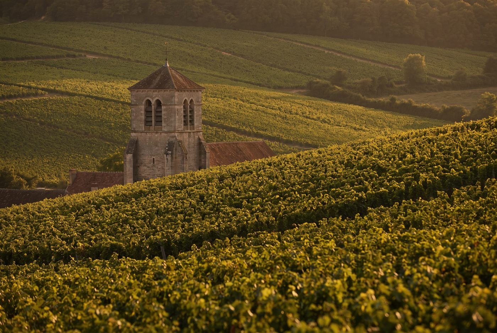

Les domaines · Côte de Beaune · Pommard
13
Pommard · Côte de Beaune
Domaine Y. Clerget
Des Volnay de haute précision, macérations à froid, levures indigènes et extractions douces.

Ambiance de Pommard
La famille Clerget est établie à Volnay depuis 1268, soit vingt-huit générations de vignerons. Après une parenthèse où les raisins étaient vendus à Henri Boillot, Thibaud Clerget a relancé la mise en bouteille au domaine avec le millésime 2015, à 24 ans, au sortir de ses années chez Boillot et Hudelot-Noëllat. Établi à Pommard, le domaine réunit une dizaine d'hectares à Volnay, Pommard, Meursault et Vougeot, dont le monopole Clos du Verseuil acquis en 1936.
Blancs
- Cépage · Chardonnay0,37 ha de vignes de 40 ans, l'unique blanc du domaine.
Rouges
- Cépage · Pinot noir0,40 ha dans le secteur Grand Maupertui, vignes de plus de 40 ans.
- Cépage · Pinot noirUn hectare en deux parcelles sur sols rocheux riches en oxyde de fer.
- Cépage · Pinot noirMonopole de 0,68 ha acheté en 1936, cuvée emblématique du domaine.
- Cépage · Pinot noir0,37 ha de vignes de plus de 50 ans sur argilo-calcaire, l'un des climats les plus réputés de Volnay.
- Cépage · Pinot noir0,65 ha exposés sud-est, vignes de plus de 45 ans.
- Cépage · Pinot noir0,68 ha sur la commune de Meursault, vinifié avec une forte proportion de vendange entière.
- Cépage · Pinot noirCuvée apparue avec les parcelles récemment ajoutées au domaine.
- Cépage · Pinot noirCuvée apparue avec les parcelles récemment ajoutées au domaine.
- Cépage · Pinot noir1,09 ha de vignes de plus de 45 ans, entièrement éraflé.
Ces cuvées vous parlent ?
Demander les disponibilités